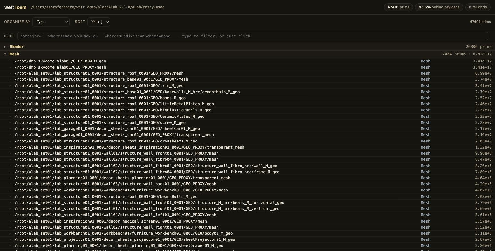

weft pull bottle_0004 --follow Mount —
the bottle and what it stands on. The other 163 threads aren't gone; they're
declared at the boundary.
Pull the thread, not the world.
weft is a read-only way to see a USD stage as data — open a scene you didn't build, slice it without loading the world, and get told when the slices you care about move.
Stand at any point — a name, an identity, an attribute, a type, a
place — and pull only the threads you care about. A thread is any relationship: a
material binding, electrical:feeds, or a kind your team defines;
hierarchy is just one thread on the spool. It reads any USD file as it ships, and
it's looking for its first outside user.

weft pull 'where:finish=translucent' — twenty-six pieces of
glassware at their exact production transforms, from a scene that was never loaded.
No path appeared in the question. Rendered with stock usdrecord from a
weft mask; this exact pull is asserted in the test suite against a hand-built
reference, placement for placement.
weft pull bottle_0004 --follow Mount —
the bottle and what it stands on. The other 163 threads aren't gone; they're
declared at the boundary.pip install "weft-usd[usd]"
weft loom your_scene.usda
A read-only workbench in your browser — the fastest way to understand a scene
you didn't build. Click a prim for its card (data and relationships, materials
resolved the inheritance-aware way). The expression bar is a live mirror: click a
row or type where:bbox_volume>1e6 and it writes the weft query for
you, so the slice language teaches itself. Any filter is a surgical slice; it opens
on the unloaded skeleton in well under a second and loads only what a dimension
actually needs.
Keep a set, and weft tells you when it moves. Keep "everything bound to glass" and come back later: the set reads holds or moved, and shows exactly what arrived, changed, or departed — ignoring renames, because it tracks identity, not bytes. The digest machinery is plumbing underneath; what you read is a calm freshness state.
weft pull id:hero-car # identity — survives restructures
weft pull type:Mesh # by schema type
weft pull material:glass # everything bound to a material
weft pull 'where:finish=translucent' # by attribute
weft pull who:name:glass # the reverse — what points at the glass prims
weft pull 'near:id:rack-R42,5' # within 5 units of a thing
weft pull path:/root/shelf01/b_0004 # location — the fallback, not the defaultNothing weft shows is hand-annotated. It reads what USD already encodes —
hierarchy, collections, material bindings resolved per purpose and inheritance —
and records each value's provenance beside it: derived from authored data, or
declared by you (team relationship kinds, identity keys that turn your existing
GUIDs into id: addresses). Unauthored data yields no value, ever:
only 8 of ALab's 158 look files author opacity, so 150 props get no
finish — an invented "opaque" would be a claim nobody made. Sparse
data degrades to declared ignorance, not confident nonsense. With no setup at
all, name:, path:, type: and the stock USD
kinds work bare on any file.
From real runs on ALab, not projections:
--follow Mount — the other 163 declared at the boundary, not silently dropped.Everything composes and renders through unmodified stock USD — the images above
came from the usdrecord binary that ships with macOS. Masks, payloads,
LoadNone: USD's own machinery, fed by weft's answers. Every artifact
weft writes is real USDA; nothing is re-rooted or rewritten. Deferral, never
extraction.
There is also an experimental versioning engine underneath the read-only tools — a content-addressed store, immutable revisions, channels, and a promotion gate that re-evaluates a change against each downstream consumer's own tolerance before it lands (on ALab, a 0.7 cm nudge inside the provider's 1 cm promise is still refused by the 19 consumers whose tolerances are tighter). It has been exercised but not used in anger; treat it as a research direction, not a product. The read-only workbench is the front door.
pip install "weft-usd[usd]" # on PyPI
weft loom your_scene.usda # the workbench, in your browser
weft pull 'where:finish=translucent' --context your_scene.usda --mask-out pull.mask
usdrecord --mask "$(tr '\n' ',' < pull.mask)" your_scene.usda out.pngStatus: a working research prototype — validated against real production USD, adversarially reviewed, now on PyPI, and honest about what it hasn't proven: it has no outside users yet, and it's looking for its first. If you have a scene that outgrew its files, come poke holes in it.